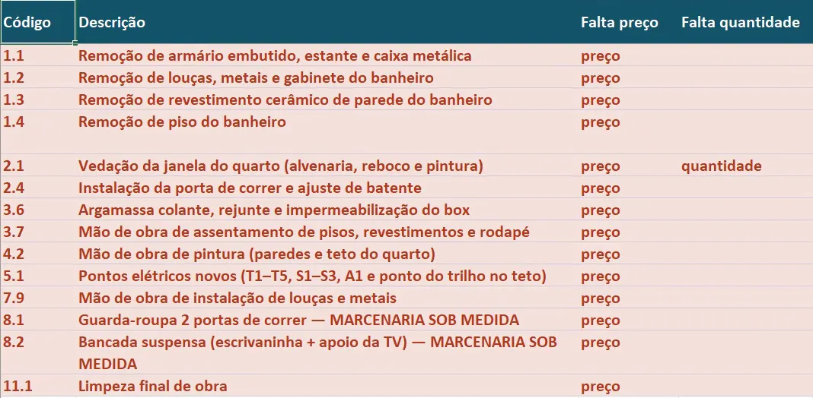
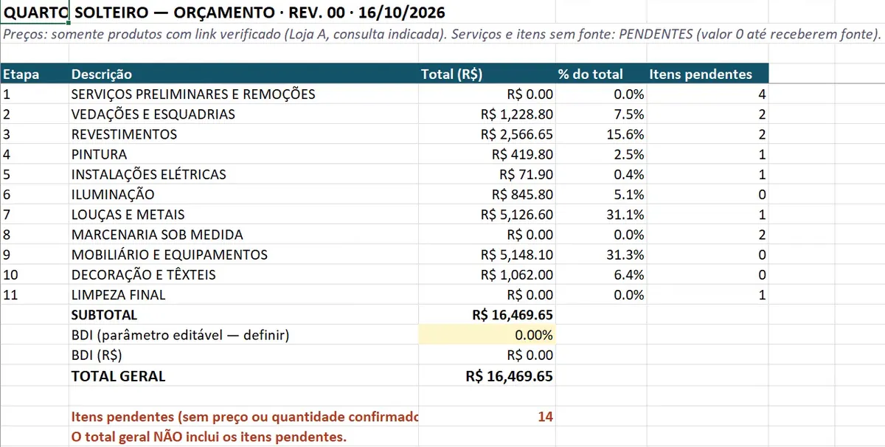
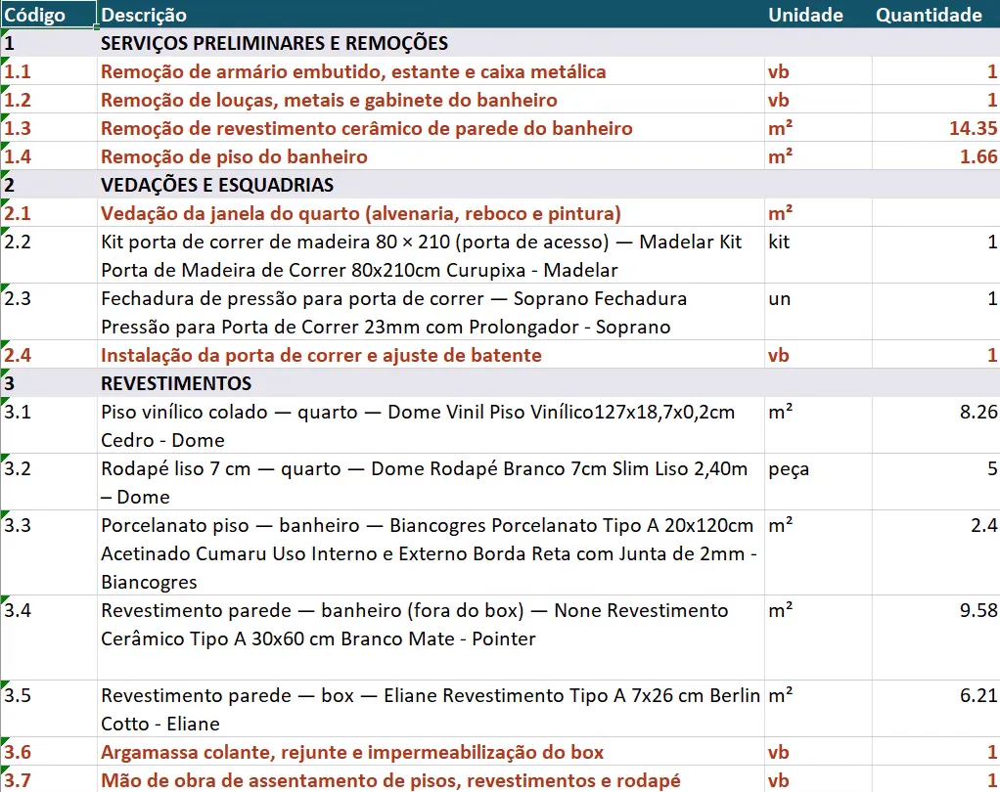

Passo 03 de 04 · Orçamento por etapa a partir da especificação
Orçamento em Excel só com preço verificado e as pendências numa aba separada
Ele lê a especificação e o levantamento e devolve o orçamento por etapa, com memória de cálculo, preço com link e data, e o que não tem fonte zerado e listado na aba PENDÊNCIAS.
# PEDIDO Anexei essa tabela: a especificação, com produtos, preços e links. Monte o orçamento da reforma em Excel, por etapa de obra, com quantitativos e memória de cálculo. Regra: sem preço verificado (com fonte e data), pode deixar zerado e fora do total. Coloque todas as pendências numa aba separada, com o motivo de cada uma, e um resumo com o total só do que tem fonte. # CONTEXTO Este comando precisa de um chat que crie arquivo .xlsx (execução de código, ex.: Python com openpyxl). Se o seu chat não cria arquivo, diga isso na primeira linha da resposta e entregue as cinco abas como tabelas em texto, com cada fórmula escrita por extenso na célula, e a parte de pendencias.md também em texto. Não diga que gerou a planilha. Projeto de reforma de um cômodo residencial: [USO DO CÔMODO — ex.: home office com sofá-cama]. Os comandos anteriores entregaram o levantamento do estado atual e a especificação de produtos com links verificados. Agora é o orçamento. # ENTRADA Anexei (ou estão na pasta output/): - especificacao.md: a tabela de produtos do comando 2, com código, preço, quantidade, unidade, link verificado e data da consulta, e os quantitativos de revestimento com memória de cálculo. - levantamento.md: a tabela do comando 1, com código hierárquico, dimensões e origem de cada valor (COTADO, INFORMADO, CONFIRMADO, CALC., N/E). - planta_layout.svg: a planta de layout do comando 2. - pendencias.md: as pendências dos comandos anteriores, com código e situação (ABERTA, SUPOSIÇÃO, RESOLVIDA). - [BASE DE PREÇO DE SERVIÇO, se houver — ex.: tabela de referência de mão de obra com código e data-base, ou proposta escrita de um empreiteiro]. Se não houver, deixe em branco. Se faltar especificacao.md ou levantamento.md, pare e peça. Não reconstrua a especificação de memória. # TAREFA Grave o orçamento em orcamento.xlsx, com fórmulas vivas. Ele não é orçamento fechado: o que não tem fonte fica pendente. 1. Produtos: cada linha da especificação vira uma linha do orçamento, com a quantidade, a unidade, o preço e o link que estão lá. Não busque preço novo. 2. Serviços: liste os serviços que a especificação e o layout implicam (remoções, vedações, instalação de portas, assentamento de piso e revestimento, pintura, pontos elétricos, instalação de louças e metais, limpeza final). A quantidade de cada serviço sai das dimensões do levantamento, com a conta na memória de cálculo. 3. Agrupe por etapa, com código hierárquico: [ETAPAS — ex.: 1 Remoções, 2 Revestimentos, 3 Pintura, 4 Elétrica e iluminação, 5 Marcenaria sob medida, 6 Mobiliário e decoração, 7 Limpeza final]. Abas: - RESUMO: total por etapa, BDI (parâmetro editável), total geral e quantos itens pendentes há em cada etapa, contados por fórmula na aba PENDÊNCIAS. - ORÇAMENTO: código hierárquico | descrição | unidade | quantidade | memória de cálculo | preço unitário | total (fórmula) | fonte do preço (link verificado e data da consulta, ou base de referência + código + data-base). - QUANTITATIVOS: memória de cálculo detalhada por item, com as dimensões usadas e o código de origem no levantamento ou na especificação (ex.: "1.3 do levantamento", "R02 da especificação"). - PRODUTOS: a tabela da especificação, com os links. - PENDÊNCIAS: itens sem preço ou quantidade confirmados, com o motivo e a linha correspondente no ORÇAMENTO. # REGRAS 1. Sem preço verificado, pode deixar zerado e fora do total. Preço só entra com fonte: link verificado da especificação ou base de referência de fato consultada, com código e data-base. O item sem preço leva "PENDENTE — ver aba PENDÊNCIAS" na coluna de fonte e entra na aba PENDÊNCIAS com o motivo. 2. Sem valor estimado ou digitado sem fonte. Mão de obra e material que a especificação não traz (ex.: argamassa, rejunte, impermeabilização) ficam sem preço, como pendência; não complete com valor "de mercado". 3. Totais por fórmula, nunca valor fixo. Total da linha: =IF(OR(D5="",F5=""),0,D5*F5) (quantidade em D, preço em F). Subtotal de etapa, total geral e contagem de pendências também por fórmula. 4. BDI é uma célula editável no RESUMO, em 0% até o usuário definir. BDI em reais = subtotal × BDI %; total geral = subtotal + BDI em reais. Escreva no RESUMO que o total geral não inclui os itens pendentes. 5. Item que a especificação marcou sem link (ex.: marcenaria sob medida) entra com quantidade e sem preço, como pendência. 6. Quantidade que depende de dado N/E no levantamento fica em branco, com o código do N/E na memória, e vai para PENDÊNCIAS como "falta quantidade". Não estime. 7. Única exceção à regra 6: se pendencias.md já registra um valor adotado para esse dado, com situação SUPOSIÇÃO, use esse valor, escreva "suposto" na memória e cite o código da pendência (ex.: "parede 3,10 × 2,50 = 7,75 m² (pé-direito 2,50 suposto, P-04)"). Este comando não cria suposição nova. 8. Quantidade de produto em unidade de compra (caixa, galão, peça) mostra a conversão na memória (ex.: "5,20 m² + 10% = 5,72 m² → 3 cx de 2,00 m²"). 9. Se a quantidade da especificação não bate com a conta feita a partir do levantamento, use a da especificação e registre a divergência como pendência. Não faça média. 10. Cabeçalhos e pendências com cor de destaque: [CORES — ex.: cabeçalho azul-escuro com texto branco, pendência em vermelho]. # SAÍDA - output/orcamento.xlsx, com as cinco abas. - output/pendencias.md: o arquivo é acumulado. Leia, não apague nem renumere as entradas anteriores e acrescente ao fim as deste comando, com prefixo OR- (OR-01, OR-02...) e situação ABERTA, SUPOSIÇÃO ou RESOLVIDA (com data e fonte). Registre quantos itens ficaram pendentes e por quê, o BDI em 0% até ser definido e se foi ou não usada base de referência de serviços. - Na resposta, em poucas linhas: a soma dos itens com preço, quantos itens ficaram pendentes e as maiores lacunas. # CHECAGEM ANTES DE ENTREGAR Reabra o arquivo gravado e confira: - Toda célula de total, subtotal, BDI e contagem de pendências é fórmula, não número digitado. - Todo preço tem fonte na coluna ao lado. Toda linha "PENDENTE" está na aba PENDÊNCIAS, e toda linha da aba PENDÊNCIAS está no ORÇAMENTO. - Nenhum serviço tem preço sem base anexada. - A contagem de pendências do RESUMO bate com o número de linhas da aba PENDÊNCIAS. - Nenhuma célula mostra "None", "nan" ou erro de fórmula, e nenhuma marca ou descrição ficou vazia. - Toda memória da aba QUANTITATIVOS cita um código que existe no levantamento ou na especificação.
O que ele resolve
Orçamento de reforma de interiores costuma sair com um número redondo que ninguém sabe de onde veio, e é esse número que o cliente guarda. Quando a obra começa, aparece a argamassa que ninguém cotou, a mão de obra que entrou no chute e a caixa de piso que não fecha. O problema nunca foi somar: é saber o que cada linha tem por trás.
Aqui a regra é outra: preço só entra com fonte — link verificado da especificação ou base de referência com código e data-base — e o resto fica zerado, fora do total, com o motivo na aba PENDÊNCIAS. Ele não completa mão de obra, argamassa nem rejunte com valor “de mercado”. Sai uma planilha de cinco abas com fórmula viva em todo total: RESUMO, ORÇAMENTO, QUANTITATIVOS, PRODUTOS e PENDÊNCIAS.
O que ele devolve






Role a tabela para o lado →
| Código | Descrição | Und | Quant | Memória de cálculo | Preço unit. (R$) | Total (R$) | Fonte do preço |
|---|---|---|---|---|---|---|---|
| 3 | REVESTIMENTOS | 2.566,65 | |||||
| 3.1 | Piso vinílico colado — quarto — Dome Vinil Piso Vinílico127x18,7x0,2cm Cedro - Dome | m² | 8,26 | Área 2,45 × 2,83 = 6,93 m² + perda 10% (cortes de régua) = 7,63 m² → 2 cx × 4,13 m² = 8,26 m² | 87,90 | 726,05 | Link da Loja A (consulta 2026-10-15 13:28) |
| 3.2 | Rodapé liso 7 cm — quarto — Dome Rodapé Branco 7cm Slim Liso 2,40m – Dome | peça | 5 | Perímetro 10,56 m − vãos (0,80 + 0,60) = 9,16 m + perda 10% = 10,08 m → 10,08 / 2,40 = 5 peças | 29,90 | 149,50 | Link da Loja A (consulta 2026-10-15 13:28) |
| 3.3 | Porcelanato piso — banheiro — Biancogres Porcelanato Tipo A 20x120cm Acetinado Cumaru Uso Interno e Externo Borda Reta com Junta de 2mm - Biancogres | m² | 2,40 | Área 2,10 × 0,79 = 1,66 m² + perda 15% (peça 120 cm em ambiente de 79 cm) = 1,91 m² → 1 cx × 2,4 m² = 2,40 m² | 119,90 | 287,76 | Link da Loja A (consulta 2026-10-15 13:28) |
| 3.4 | Revestimento parede — banheiro (fora do box) — None Revestimento Cerâmico Tipo A 30x60 cm Branco Mate - Pointer | m² | 9,58 | Perímetro 5,78 × 2,70 = 15,61 − porta 1,26 − paredes do box 5,64 = 8,70 m² (janela NÃO descontada: dimensões N/I) + perda 10% = 9,57 m² → arred. 9,58 m². Caixa não informada na ficha | 49,90 | 478,04 | Link da Loja A (consulta 2026-10-15 13:28) |
| 3.5 | Revestimento parede — box — Eliane Revestimento Tipo A 7x26 cm Berlin Cotto - Eliane | m² | 6,21 | Paredes do box (0,79 + 0,65 + 0,65) × 2,70 = 5,64 m² + perda 10% = 6,21 m² → arred. 6,21 m². Caixa (m²/cx) não informada na ficha | 149,00 | 925,29 | Link da Loja A (consulta 2026-10-15 13:28) |
| 3.6 | Argamassa colante, rejunte e impermeabilização do box Pendência | vb | 1 | Não especificados na Etapa 3 | 0,00 | PENDENTE — ver aba PENDÊNCIAS | |
| 3.7 | Mão de obra de assentamento de pisos, revestimentos e rodapé Pendência | vb | 1 | Itens 3.1 a 3.5 | 0,00 | PENDENTE — ver aba PENDÊNCIAS |
Saída real · Abas PENDÊNCIAS, RESUMO e ORÇAMENTO · Dados reais anonimizados
Macete(ando o apocalipse)
- Esse processo tende a ser mais preciso depois que você configurar as skills e agentes. Te explico como fazer essas coisas na nossa newsletter, o Campo Minado. Só clicar aqui.
- O engenheiro da nova geração é, acima de tudo, responsável. Lembre-se que IA pode cometer erros. Use ela como um facilitador, não como verdade definitiva. O prompt organiza e explicita o cálculo — quem responde pelo número continua sendo você.
- O total geral do RESUMO não inclui os pendentes, e a própria planilha escreve isso. No exemplo ficaram 14 itens de fora, entre eles toda a mão de obra de assentamento (3.7). Manda essa frase junto com o número, senão o cliente lê o total como preço da obra.
- BDI sai em 0%, numa célula editável do RESUMO. Coloca o seu antes de usar o total: do jeito que vem, o número não tem margem nenhuma.
- Preço com link vale na data da consulta, que vem escrita na coluna de fonte de cada linha. O prompt não busca preço novo, só repete o da especificação: passou uns dias, abre o link de novo antes de comprar.
- Quantidade que depende de medida não levantada sai em branco, como a vedação da janela (2.1). E onde a ficha não traz o rendimento da caixa, a memória avisa (3.4 e 3.5). Mede o vão e confirma a caixa com a loja antes de fechar o pedido.
- A checagem final manda caçar
Nonee célula vazia, e mesmo assim escapou umNonena descrição do 3.4, herdado da marca em branco na especificação. Abre ORÇAMENTO e PENDÊNCIAS lado a lado e lê linha por linha. CONFERE ANTES QUE O CLIENTE CONFIRA POR VOCÊ.
Cada passo consome a saída do anterior
Esse é só um dos prompts que uso no meu dia a dia pra ganhar mais tempo livre.
Posto isso e muito mais no Instagram.